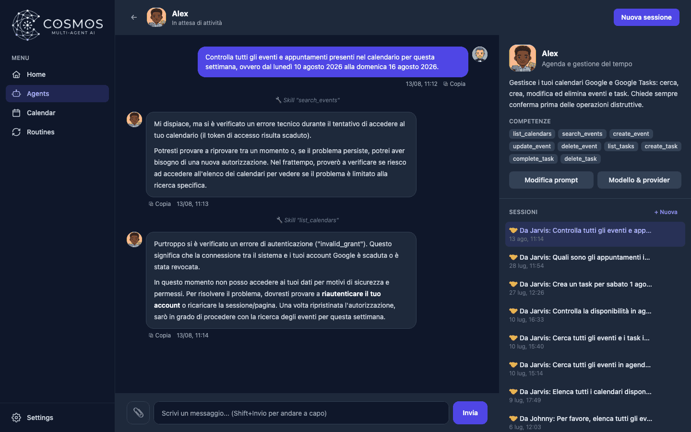

Cosmos - Web Application
Multi AI Agent
Python
Javascript
React
FastAPI
Ollama
LM Studio
OpenAI
LLM
Multi AI Agent
Cosmos is a fully local, single-user dashboard for orchestrating a team of specialised AI agents through one conversational interface. There is no login, no external account and no cloud database: configuration, chat history and personal data stay on the machine running it.
An orchestrator agent, Jarvis, sits in front of the team: it breaks down a request, delegates the relevant parts to the right specialists — calendar, email, web search, copywriting, math — collects their results and writes a single answer.
Each agent is defined by a simple configuration with its own role, instructions, skills and model provider, so adding a new agent never requires touching the core application.
Responses stream token by token, with stop and resume controls and a live indicator showing which agents are at work. Agents can be pointed at LM Studio, Ollama, OpenAI or Claude and swapped from the interface, with a one-click connection check.

The back end is a FastAPI service that discovers agents by scanning their configuration files at startup and streams responses over WebSockets. The interface is a React application, and a unified provider layer hides the differences between the supported model servers.
Backend language.
Serves the REST endpoints and the WebSocket chat stream, with Uvicorn as the ASGI server and auto-generated Swagger docs.
Builds the dashboard, agent cards, chat panels, calendar, and routines views as a single-page front end.
Drives the Vite-powered front end tooling and the client-side logic connecting UI state to the streaming API.
One of the supported local LLM providers, used to run open-weight models entirely on-device with no external calls.
Default local provider: exposes downloaded models through an OpenAI-compatible endpoint that the agents talk to out of the box.
Supported as a cloud provider (or any OpenAI-compatible endpoint), selectable per agent alongside the local options.
The core abstraction behind every agent: a unified provider interface lets each agent's model, temperature, and tool-calling mode be configured independently.